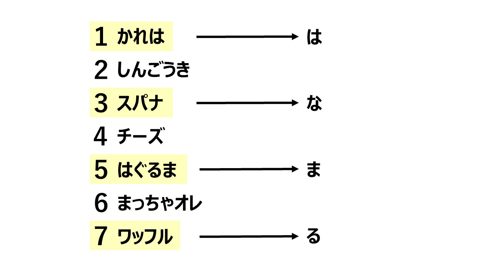

初級編 解説
初級編では廊下に掲示されていた６枚のパネルと、問題用紙の内容を組み合わせて解くものとなっておりました。 パネルには特徴的な枠線と、右下に赤い丸で囲われたマークがありました。

黄色と緑のマスに「うえ」、「かき」が入るようです。
「うえ」が３，４番目、「かき」が６，７番目に入る事から、
「あいうえおかきくけこ」が入ると推測できます。
答えは「アンサー」でした。
枯れ葉のパネル

3.6.9.11の場所を読めという言葉と、問題用紙の円形、これが何を意味するのかを考える問題でした。
1,4,8の場所には、「は」「な」「び」が、
5,7,12の場所には＝「わ」「な」「げ」が入る事から、ズバリ時計の文字盤と対応していることが分かります。
３，６，９、11時に書かれたひらがなを読み、答えは「まえばし」です。
チーズのパネル

赤いマスには奇数が、青いマスには偶数が入り、丸の数字は合計である。というルールで解く算数パズルです。
左下には３が入っています。合計が３になる組み合わせは１＋２しかないので、１，２の場所が確定します。
同じ数字は一度しか使えないルールにも従ってマス目を埋め、５，６，７の数字が入った升目に書かれた文字を読むと、答えは「まいく」でした。
抹茶オレのパネル

「すべてのマークの名前をあいうえお順に並べて１から番号をつけよう。
次に奇数番目のマークの名前のお尻の文字を読もう」
と出てきました。
マークとはパネルの右下にあるイラストです。
６枚のイラストにはそれぞれ名前がついていました。

最後に奇数番目のお尻の文字を読んでみましょう。

よく見てみると「注意事項が書かれたパネル」には特徴的な枠線と右下に赤い丸があり、
そこには信号機の絵が書かれております。
(手元の問題用紙の表紙にも全く同じものがあります。)
つまり、この注意事項のパネルこそが、
見落としていた７枚目のパネルだったことが分かりました。
改めて、もう一度マークの名前を並べてみましょう。
先ほど並べた６つの名前に「しんごうき」を追加し、
奇数番目なので１，３，５，そして７番目のマークの名前のお尻の文字を読みましょう。
(なお、「しんごう」「シグナル」「車両用信号」「交通信号灯」などの呼び方をしても同じ結果になります。)

つまり、今回の納涼祭謎解き初級編ではすべての謎を解き明かし、
注意事項のパネルが７枚目のパネルであることに気づき、
最終解答「はなまる」を提出した方がクリアとなりました！